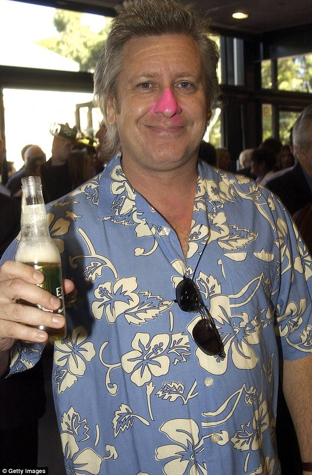

Persona 1 - Frank Actively seeking sobriety

Functionality:
Seeking out resources for treatment
Demographics
- Gender: Male
- Age: 52
- Job: Store Manager
- Family: Wife of 20 years and 2 kids
Technology:
- Computer: Dell Latitude 850 with Google Chrome running Windows 10 Pro
- Mobile Device: iPhone X
- Knows how to use basic social media
- Casual User
- Has Samsung SmartTV
Attitudes and Needs:
- Frank had an intervention from his family -- wife, 2 kids, college friends
- Frank acknowledges his problem and is motivated
- Frank is seeking a place within his budget with the right duration of program and techniques that align with what he needs
- Frank needs positive reinforcement from family & friends/support system
Habits:
- Frank drinks every night between 8pm to midnight, consuming ~18 drinks/day 6 days/week.
- Frank deals with being hungover daily and is high-functioning.
Goals:
- To achieve sobriety
- To find the best treatment center for his current situation
- Turn his life around for the better
User Story:
As a user, Frank wants to find the best treatment center for his current situation
Use Case:
- Frank is a middle age man currently seeking treatment centers on the NMgetssober website and was referred by one of his coworkers.
- Pre-condition: Frank uses the locator tool to find treatment centers.
- Post-condition: Frank finds one that fits his needs.
Interaction Flow:
- Frank clicks on the treatment locator tab.
- NMgetssober loads the available
- Frank inputs his city
- Frank looks for the one that fits his need
- Frank clicks on the treatment center to learn more about it